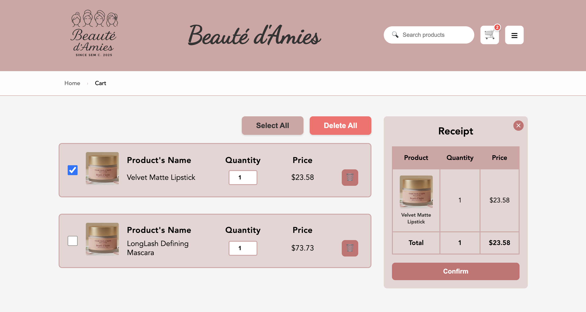
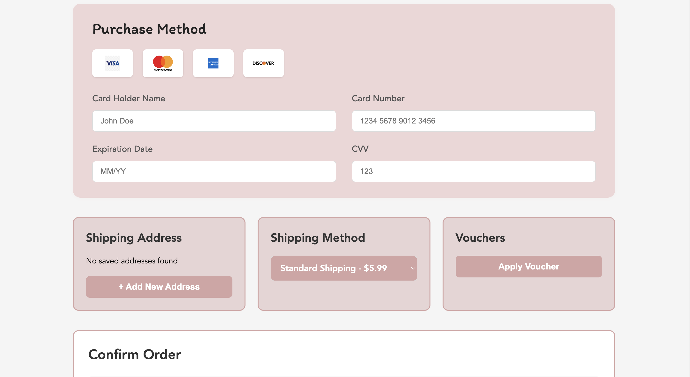

Beauté d’Amies
E-Commerce Platform
A production-ready web application developed under the MVC pattern using Node.js, Express, and a relational schema architecture, deployed systematically via containerized environments.
Core Technologies Implemented
Individual Ownership: Cart & Purchase Engineering
While contributing to the shared architectural blueprint, database design constraints, and cross-perimeter state configurations, my core development ownership focused entirely on architecting the system's financial and logistical engine: the Cart and Purchase Modules.
Real-Time Cart Control Machine
Engineered batch-processing interface tools including specialized global checkbox toggle controls (Select All/Deselect All) and bulk deletion mechanisms (Delete All). Built reactive client-side script triggers handling individual deletions using direct DOM manipulation.
Dynamic Computational Receipt Logic
Developed reactive mathematical pipeline structures that listen to batch modifications. Item sub-totals, base cart sums, and multi-tier transactional breakdowns scale instantly on-screen without executing expensive page reloads.
Advanced Financial Checkout Pipeline
Architected a secure payment gate interface allowing users to systematically choose saved payment card methods or dynamically register new credentials utilizing automated string token masking and input field validation frameworks.
Dynamic Multi-Factor Fee Ingestion
Implemented complex transactional logic calculating the final payable value on checkout based on a strict multi-tiered dependency matrix: Final Total = (Base Cart Sum + Shipping Fee - Voucher Values) * 1.10 Tax Multiplier
Shared Platform Architectural Modules
To support the core e-commerce experience, the team integrated auxiliary decoupled system modules executing robust application actions:
- Discussion Forum Subsystem: Features full-text title and body index search capabilities, polymorphic sorting (newest, oldest, most liked), multi-tier user category routing, and admin-override access to prune community content.
- Content Production Blog: Implements a Markdown-based publishing engine supporting real-time rendering, auto-generated nested Tables of Contents (ToC), social amplification buttons, and administrative soft-delete data safety protocols.
- Product Catalog & Review Grid: Handles deep nested product classification routing (Category → Sub-category → Collection) backed by custom "Show More" dynamic pagination loops and 1-5 star user sentiment feedback perimeters.
Project Documentation & Demo
Technical Project Objective
This enterprise-styled full-stack platform was engineered to handle robust multi-user web traffic. The objective centered on building a modular architectural layout enforcing clean separation of concerns, transactional state management, and continuous local infrastructure data persistence.
Database Design & Integrity Constraints
The platform relies on a normalized relational storage model designed to guarantee data consistency. All entities enforce strong data type validations and relational linkages:
- USERS & POSTS (1 to N): Links forum authors securely to distinct data logs.
- POSTS & COMMENTS (1 to N): Cascades comment blocks directly under respective article assets.
- VOTES Unique Constraint Matrix: Enforces a strict multi-column unique schema layer:
UNIQUE (user_id, post_id, comment_id). This ensures an authenticated user can execute only one interaction event per entity, systematically neutralizing vote exploitation. - Relational Perimeters: Integrated
ON DELETE CASCADErules across foreign keys to guarantee clean garbage collection and data sanitation upon primary key record deletions.
Production Environment Walkthrough
Features a fully responsive user interface layout paired with an optimized dynamic catalog exploration system. Implements unified design patterns across multi-tier category structures to maximize discoverability and intuitive customer navigation.

Engineered a robust cart management system featuring real-time computational receipt logic, batch item selection controls, and a secure checkout pipeline. The system dynamically calculates subtotals, applies multi-factor fee adjustments, and scales instantly on-screen without page reloads.

Architected a secure payment gate interface allowing users to systematically choose saved payment card methods or dynamically register new credentials utilizing automated string token masking and input field validation frameworks.
Fault-Tolerance Retrospective & System Roadmap
A resilient architectural posture requires transparent code auditing. A core technical highlight of the transactional module includes a failover strategy designed to safeguard order tracking against database connectivity loss via a structured fallback pipeline: if primary database networks fail, cart states automatically write to localized carts.json and orders.json array buffers.
Recognizing development boundaries due to strict academic timelines, the engineering roadmap highlights several system optimization goals:
- Persistent Selection Boundaries: Cart selection checkbox states currently exist strictly within the client-side transient DOM; the next infrastructure phase involves shifting state management into session storage perimeters to survive hard page refreshes.
- Real-Time Inventory Hard Constraints: The platform needs to integrate real-time transactional inventory stock verification checks to block user-selected item volumes from exceeding actual store warehouse counts.
- Identity Security & Verification Loops: Plan to implement secure third-party Federated Identity protocols (OAuth2 Google/Facebook Login) and an automated NodeMailer SMTP 6-digit OTP verification microservice to replace current standard local registration forms.